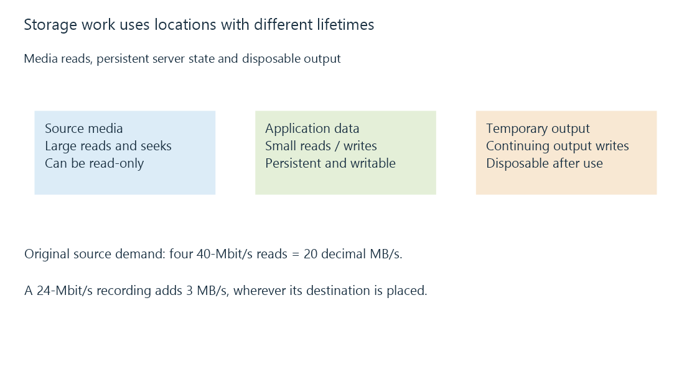

How media storage affects an Emby server
Media storage serves large playback reads, small library operations and writable server data, each with different demands.
A movie is a large file, but an Emby server does more than read movies. Browsing a library can request many small artwork files. Scanning opens directories and examines media headers. Transcoding reads a source while producing temporary output. Recording adds a continuing write workload. The storage arrangement has to serve the combination that is active.
This explains a familiar result: a disk that easily supplies one film may feel slow during a scan, even though the film's bitrate is far below the disk's advertised transfer rate.
From a stream to storage demand
A 40 Mbit/s source requires about 5 decimal MB/s of encoded data, because there are eight bits in a byte. Four such sources average 20 MB/s. This is payload arithmetic, not a measured drive requirement: variable bitrate, read-ahead, container access and competing work change the requests reaching storage.
An original planning example makes the layers explicit:
Four source reads: 4 × 40 Mbit/s ÷ 8 = 20 MB/s
One recording: 24 Mbit/s ÷ 8 = 3 MB/s
Combined payload: 23 MB/s
The reads and recording may not use the same disk. Conversely, four streams of one already cached file may not cause four identical physical reads. Measure at the layer you are trying to understand.
A path for each kind of data

| Data | Typical access | What must remain available |
|---|---|---|
| Source media | Large reads, seeks, occasional additions | Files and their stable library paths |
| Server application data | Small reads and writes, database updates | Persistent writable storage |
| Transcoding output | Continuing creation and consumption | Enough writable temporary capacity |
| Recording destination | Sustained writes plus later reads | Space and write access for the recording |
A media share can be read-only while the server's application-data and temporary locations remain writable. Playback permission for an Emby account is another decision: it does not give the operating-system process permission to open a file.
Why a fast copy can coexist with a slow library
A large copy measures a relatively orderly transfer. Opening thousands of separate files introduces directory lookups, metadata reads and many small requests. On a rotating drive, positioning between those requests can dominate the elapsed time. On network storage, request round trips and the remote server also participate.
The sequential and random I/O distinction is therefore more useful than asking whether a drive is simply “fast.” Separating busy application data from bulk media can reduce competition, but the benefit depends on the actual workload. Moving a media file to another disk does not accelerate a CPU-limited transcode.
For a playback problem, establish whether the server is waiting for source bytes, waiting for conversion, or waiting to deliver output. A rising storage queue and slow source reads tell a different story from a quickly read source and a fully occupied encoder. The storage evidence belongs alongside transcoding bottlenecks and network delivery evidence.
See Also
- Sequential and random I/O in media workloads
- Storage latency: waiting for individual operations
- Read-only media access and separate writable data
- Transcode temporary files and generated output